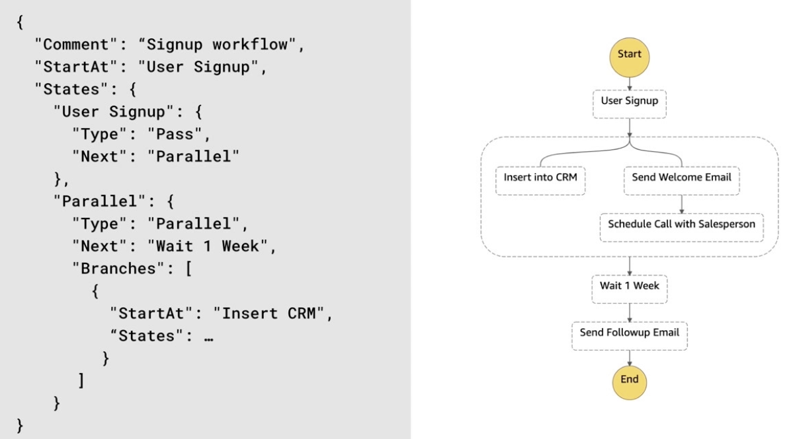

2.0 - Understanding AWS Core Services
Interacting with AWS
Methods of Interacting with AWS
- AWS Console - Browser-based web app for interacting with most or all of the services.
- Typically used for testing out AWS services.
- AWS CLI - Command line access for administering AWS resources
- AWS SDK - Programmatic access - allows you to interact with AWS services via code.
- Supported by a multitude of programming languages e.g. NodeJS, JavaScript, Python, GO.
- Repeating tasks typically automated via the CLI and or SDK.
- SDK allows automation of AWS tasks within custom applications.
Using the AWS Console
- User sign in available
- Root user == Admin - can do anything
- User information shown e.g. account, organization, quotas, security.
- Region and support selectors available.
- Services dropdown shows most of available services along with search bar.
- Certain regions will be shown to not be region-specific.
Using the AWS CLI
- AWS Console Security Credentials Access Keys Create New Access Keys
- Advised to create access keys for IAM users only, not root.
- Copy access key and secret access key (one-time viewing only!)
- Installation:
- Install per platform requirements
- Verify with
aws --version
- Add access keys:
aws configure --profile <profile name>
- Add access key, secret access key, default region and output format
- Verify with sample command e.g.
aws s3 ls --profile <profile name>
Interacting with AWS Scenarios
Interacting with AWS Scenario 1
- Several production workloads
- New web application that manages digital assets
- Automatically need to create a user account in AWS Cognito on signup
- What interaction method? SDK - tailored to the application SDK.
Interacting with AWS Scenario 2
- Company considering AWS
- Want to use AWS Relational Database Service and test a single database
- What interaction method? Console
Interacting with AWS Scenario 3
- Startup company with web and mobile app
- Set of repeatable tasks for generating reports.
- AWS CLI recommended.
Compute Services
- Any service that allows leveraging of cloud-based virtual machines.
EC2 Overview
- A web service that provides resizable compute capacity in the cloud.
- Use cases include:
- Web application hosting
- Batch processing of data
- Web services endpoint
- Desktop in the cloud
EC2 Instance Types
- Determines the processor, memory and storage type
- Cannot be changed without downtime
- Provided in the following categories:
- General-purpose
- Compute, memory and storage optimized
- Accelerated computing (special / high performance)
- Pricing based on instance type and category.
- Certain instance types have unique capabilities.
Root Device Type
- 2 Primary Types:
- Instance store - Ephemeral storage physicall attached to the host the virtual server is running on.
- Elastic Block Store (EBS) - Persistent storage that exists seperately from the host the virtual server is running on.
- Generally more commonly used than instance store.
Amazon Machine Image (AMI)
- A template for an EC2 instance, including configuration, OS and data
- AWS by default provides many AMIs
- AMIs can be shared across AWS accounts.
- Custom AMIs can be created based on configuration.
- Commercial AMIs are available in the AWS marketplace.
EC2 Purchase Types
- Options available:
- On-demand
- Reserved
- Provides discounts over on-demand when can commit to a specific period of time.
- Provides a capacity reservation for the specific instance type.
- Instance types:
- Standard - highest discount and works for steady workloads
- Cost Models:
- All upfront (highest savings but biggest upfront investment)
- Partial upfront with reduced monthly cost.
- No upfront but still providing a reduced monthly cost compared to standard.
- Convertible - Allows conversion of some attributes, works for steady workloads
- Scheduled - Works for a particular time window you reserve, typically used for predictable workloads.
- Savings Plan
- Similar to reserved instances
- Supports compute with EC2, Fargate and Lambda
- Unlike reserved, it doesn't reserve capacity
- Provides up to 72% savings
- 1-3 Year terms available.
- Spot
- Allows leveraging excess EC2 capacity
- Provides up to 90% discount over on demand pricing
- Market price for all instance types per availability zone - the spot price
- When requesting instances, if bid is higher than spot price - instance will launch
- If spot price grows to exceed bid, the instance terminates within 2 minutes.
- Dedicated
- Dedicated physical server in the datacentre.
- May be required for server software licensing or compliance requirements.
- If instance is consistent and always needed - standard or convertible reserved.
- If batch processing and the process can start and stop without any adverse impact - use spot instances.
- If an inconsistent need for instances that cannot be stopped without affecting the job - on-demand.
- For specific per-server licensing or compliance requirements - use dedicated hosts.
- If using Lambda or Fargate alongside EC2 - choose a savings plan.
Launching an EC2 Instance
- AWS Console EC2 Launch instance
- Select AMI Custom / Marketplace / Community / Free
- Select Instance Type
- Configure instance details e,g,:
- Network
- Subnet
- Placement group
- IAM assigning
- User data - commands to run when starting
- Configure storage
- Configure network security group
- For general purpose testing, allow only "my IP" to access e.g. for SSH
- Summary & Launch
- Note: a key pair should be selected or created as appropriate.
- Once launch, find public dns and access via browser to validate.
- To terminate - select instance, then under actions instance state terminate
Elastic Beanstalk Overview
- Automates deployment and scaling of EC2 Workloads (PaaS rather than IaaS)
- Supports only a specific set of technologies
- Leverages existing AWS services
- Only pay for other services leveraged.
- Handles provisioning, load balancing, scaling and monitoring.
- Includes:
- Docker
- JAVA
- NodeJS
- Python
- GO
Features
- Monitoring
- Deployment
- Scaling
- EC2 Customizations
Use Cases
- Deploy an application with minimal knowledge of other services
- Reduce overall maintenance needed for application
- Few customizations needed.
Launching an App on Elastic Beanstalk
- Tutorials provided depending on the applications to be deployed, along with sample applications for deployment.
- AWS Console Elastic Beanstalk Get Started
- Provide details:
- Application Name
- Application Platform
- Application code Sample application or upload code
- Verify successful deployment by using the URL provided.
- Functions provided incluide:
- Health
- Logs
- Monitoring
- Alarms
- Events
- To terminate, Actions Terminate
AWS Lambda Overview
- Allows running of code without provisioning or managing servers.
- Only pay for the compute time consumed.
- Allows running of code for any type of app or backend service with minimal administration.
- Available memory configurable between 128-3008Mb
- Integrates with many AWS services like S3 and Dynamo DB
- Enable event-driven workflows
- Primary service for serverless architectures
- Advantages include:
- Reduced maintenance requirements
- Enables tolerance without additional work
- Scales based ond emand
- Pricing based on usage only.
Compute Services Scenarios
Compute Services Scenario 1
- Moving multiple workloads into AWS
- One workload to be leveraged for at least 5 years
- Organization is looking for most cost-effective solution
- Answer:
- All upfront reserved - 3 years
Compute Services Scenario 2
- PHP app to be deployed to virtual server
- Minimal experience managing EC2 Instances
- Need to scale on demand
- Answer:
- AWS Elastic Beanstalk
Compute Services Scenario 3
- Data processing workloads
- Workloads happen daily and can start or stop without issue
- Workload to be leveraged for at least 1 year
- Answer:
- Spot Instances as workload can be started/stopped without issue.
Content and Network Delivery Services
Amazon VPC and Direct Connect
VPC
- VPC = Virtual Private Cloud
- Isolated section of AWS Cloud where resources can be launched into a user-defined virtual network
- Enables virtual networks in AWS
- Supports IPv4 and IPv6
- Allows configuration of:
- IP address range
- subnet
- Route tables
- network gateways
- Supports private and public subnets
- Can utilize NAT for private subnets
- Enables connection to data center
- Can connect to other VPCs
- Supports private connections to many AWS services
Direct Connect
- A cloud service solution that makes it easy to establish a dedicated network connection from your data center to AWS.
Amazon Route 53
- Domain Name Service (DNS)
- Global AWS service (not regional)
- Highly available Minimal downtime
- Enables global resource routing
- DNS:
- Translates readily memorized domain names to the numerical IP addresses needed for locating and identifying computer services and devices with the underlying network protocols.
- DNS Changes are not instantaneous - may take around 2 hours.
- Example:
- Consider an application hosted in us-east-1 and eu-west-1
- If the us-east-1 goes down, Route 53 could be configured to automatically route the requests made to that server to the other region.
Elastic Load Balancing
- Elasticity - The ability for infrastructure supporting an application to scale up and down based on demand.
- Elastic load balancing:
- Distributes traffic across multiple targets
- Integrates with EC2, ECS and Lambda
- Supports one or more availability zones in a region.
- 3 Types of load balancer available:
- Application (ALB)
- Network (NLB)
- Classic (ELB)
- Scaling on EC2:
- Vertical scaling - scaling up with a larger instance type and additional resources.
- Would require downtime for changes to be made
- Horizontal scaling - add additional instances to handle application demand.
Amazon CloudFront and API Gateway
- CloudFront:
- Content Delivery Network
- Enables users to get content from closest server to them
- Supports static and dynamic content
- Utilizes AWS Edge locations
- Includes advanced security features such as:
- Edge locations are scattered worldwide.
- API Gateway:
- A fully managed API management service
- Directly integrates with many AWS sservices
- Allows monitoring and metrics on API calls
- Supports VPC and on-prem private applications
AWS Global Accelerator
- Networking service that sends user traffic through Amazon's global network infrastructure.
- Utilizes IP addresses that route to edge locations
- When request reaches edge locations, traffic is routed through AWS network
- Routes requests to many resources including
- NLB
- ALB
- EC2 Instances
- Elastic IP Addresses
- Can lead to varying performance improvements:
- Distance between user and initial endpoint is minimized via edge location usage
- Traffic is optimized by using AWS networks instead of public internet
- Results in improvement of first-byte latency, etc
- Provides superior fault tolerance by not relying on DNS resolution.
- Use Cases:
- Non-HTTP Protocol e.g. UDP, MQTT, VOIP
- Static IP required.
- Instant Failover required.
AWS Global Accelerator Scenarios
AWS Global Accelerator Scenario 1
- 2 Corporate Data centres
- Want their data centres to work alongside AWS for specific workloads
- Wanting persistent connection to AWS
- What Service?
- Answer: AWS Direct Connect
AWS Global Accelerator Scenario 2
- Company serves content through their site to users around the globe
- Looking to optimize performance to users around the world.
- Want to leverage a CDN,
- What service?
- Answer: Amazon CloudFront
AWS Global Accelerator Scenario 3
- Internal application on EC2 Server
- Downtime currently as demand > capacity
- Bigger server or more servers?
- What scaling approach and services?
- Answer: Horizontal Scaling and Elastic Load Balancing
File Storage Services
Amazon S3 Overview
- Files stored as objects in "buckets"
- Provides different storage classes per use case
- Data can be stored across multiple availability zones
- Enables URL access for files
- Offers configurable rules for data lifecycle
- Can serve as a static website host
Non-Archival Storage Class
- S3 Standard - default, for frequently accessed data
- S3 Intelligent Tiering - Moves data to the correct storage class based on usage
- S3 Standard-IA - For infrequently accessed data with standard resilience
- S3 One-Zone-IA - For infrequently accessed data only stored in 1 availability zone.
S3 Intelligent Tiering
- Automatically moves files based on access
- Moves between frequent and infrequent access (like hot/cold blobs in Azure)
S3 Lifecycle Policies
- Objects in a bucket can transition or expire based on criteria
- Transitions enable objects to move to another storage class based on time
- Expiration can delete objects based on age
- Policies can also factor in versions of a specific object in the bucket.
S3 Transfer Acceleration
- Enabled per bucket
- Allows for optimized uploading of data using Edge locations
Hosting a Website on Amazon S3
- AWS Console S3
- Create Bucket
- Supply details:
- Name (must be unique across accounts)
- Region
- Versioning
- Tags
- Permissions
- Enable public access (if acting as a public website)
- Select bucket and upload desired files e.g. "index.html and logo"
- Set the. permissions for users as required.
- Configure the file storage classes as required e.g. storage, intelligent-tiering.
- Encryption - Amazon S3 Master Key ensures encryption at-rest.
- When viewing the files, each should come with an object URL
- Configure the permissions as required e.g. "everyone read access for the object"
- Under properties Static website hosting "use this bucket to host a website"
- Select index file and error document where required.
- Redirect rules are optional.
- Once enabled, URL endpoint provided - permissions must be set to allow access
Glacier and Glacier Deep Architecture
- S3 Glacier
- Designed for archiving of data in S3 as a separate storage class
- Offers configurable retrieval times - quick / less quick
- Files can be sent directly or through lifecycle rules in S3
- Classes:
- S3 Glacier
- Designed for archival data
- 90-Day minimum storage duration
- Minutes or hours retrieval time
- Retrieval fee per GB retrieved
- Over 5x less expensive than S3 Standard storage class
- S3 Glacier Deep Archive
- Archival data
- 180-day minimum storage duration
- Data retrieval in hours
- Pay a retrieval fee per GB
- Over 23x less expensive than S3 Standard storage class.
- Typically, the management console is used to quickly set up S3 glacier, the data can then be uploaded and retrieved programatically
Elastic Block Store (EBS)
- EBS = Persistent block storage for use in EC2 storage
- Can scale to support petabytes of data per workload
- Enables redundancy within an availability zone
- Allows users to take snapshots of its data
- Offers encryption of its volumes
- Provides multiple volume types including:
- General SSD - Cost-effective for general workloads
- Provisioned IOPS SSD - High performance for low latency applications
- Cold HDD - Less frequently accessed data
- Throughput optimized HDD - Frequently accessed data
Elastic File System
- Elastic File System
- Fully managed NFS File System
- Designed for Linux Workloads
- Scales up to petabyte scale
- Stores data across multiple AZs
- Storage classes:
- Standard
- Infrequent access
- Provides configurable lifecycle data rules
- For windows workloads consider Amazon FSx
- Fully managed windows file system
- Includes native windows features like Windows NTFS, Active Directory Integration, and SMB Support
Data Transfer with AWS Snowball
- Service to phyically migrate petabyte scale data to AWS
- AWS snowmobille - "" for exobyte scale data
- Snowball:
- Designed for large scale data transfer
- Supports petabyte-scale transfer
- Physical device delivered by AWS
- Snowball can be connected to network to upload data
- Device then returned by local carrier
- AWS recives device and loads data into S3
- Snowmobile
- Designed for large scale data transfer
- Supports exabyte-scale transfer
- Shipping container delivered to location
- AWS sets up connection to network
- Data loaded onto snowmobile
- AWS loads data into S3 when container received by AWS.
File Storage Scenarios
File Storage Scenario 1
- Site offering daily developer tutorials
- S3 stores assets needed per tutorials
- Assets very popular within the week of launch
- Not popular a week after
- What's the most cost-effective solution whilst maintaining durability?
- S3 Lifecycle rules with S3 Standard IA storage class
File Storage Scenario 2
- Social media company
- 2Pb of user-generated content to be migrated
- Is there a faster method than uploading over the internet?
- AWS Snowball
File Storage Scenario 3
- Messaging app
- Looking for shared file system between 8 different Linux EC2 Instances
- File system to support 1Pb of data
- What approach?
- Utilise elastic file system (EFS) - needs to definitely be for linux workloads and maximum of Petabyte data.
Database Services and Utilities
- As with other services on AWS, you can utilise IaaS, PaaS or SaaS for database services and utilities. IaaS can be leveraged by EC2 Instances, however, PaaS and SaaS options are also available.
Amazon Relational Database System (RDS)
- PaaS for databases
- Fully managed service for relational database
- Handles provisioning, patching, backup and recovery of the database
- Supports deployments across multiple AZs
- Some platforms support read replicas
- Launches into a VPC
- Provides both general-purpose SSD and Provisioned IOPS SSD options for storage.
- Database options include:
- MySQL
- PostgreSQL
- MariaDB
- Oracle Database
- SQL Server
- Amazon Aurora
- A MySQL and PostgreSQL-compatible relational database built for the cloud.
- Aims to optimize performance, simplicity and costs.
Amazon Database Migration Service (DMS)
- Allows moving of data into AWS from existing databases.
- Supports both one-time and continuous migration.
- Supports many popular database types.
- Only pay for compute leveraged by process.
Amazon DynamoDB Overview
- Fully managed NoSQL database service - SaaS
- Provides key-value and document database functionality
- Offers extremely low latency at any scale
- Supports automated scaling based on configuration
- Offers in-memory cache with the DynamoDB Accelerator - DAXX
- Use cases:
- Scale without excessive maintenance
- Serverless applications
- Implementations where low latency is key
- Data models without blob storage
Amazon Elasticache and Redshift
Elasticache
- Fully-managed in-memory data stores
- Supports Memcached and Redis
- Low latency in response times
- Enables scaling and replicas to meet application demand
- Common use cases:
- Database layer caching
- Session storage
Redshift
- Scalable data warehouse service
- Supports petabyte scale warehousing of data
- Leverages high performance disks and columnar storage
- Offers full encryption of contents
- Isolation via a VPC
- Querying of exabytes-worth of data can be done by AWS Redshift Spectrum
Database Services Scenarios
Database Services Scenario 1
- Financial services
- Data warehouse getting transitioned up to AWS for analysis
- Data warehouse needs to support up to 2PB
- What approach?
- Utilise AWS Redshift
Database Services Scenario 2
- MySQL DB to be launched for new web application
- Need direct access to the virtual server running it
- Answer: Use an EC2 instance
Database Services Scenario 3
- Store realtime analytics
- Low latency and high scaling
- Minimize maintenance needs:
- DynamoDB
App Integration Services
AWS Messaging Services
Simple Notification Service (SNS)
- Fully managed pub/sub messaging service
- Enables creation of decoupled applications
- Organised according to topics
- Integrates with multiple AWS services
- Provides end-user notifications via any of SMS, email, etc.
- Example use case: User Signup
- User signup is set up on a SNS Topic
- Lambda function, SQS Queue and email notifications could all be triggered based on the topic event.
Amazon Simple Queue Service (SQS)
- Fully managed message queue service
- enables building decoupled and fault-tolerant applications
- Up to 256kb data payload
- Messages storeable up to 14 days
- 2 Queue Types:
- Standard
- First-in-first out (FIFO)
Sample Architecture
- SNS and SQS could be leveraged in many ways together, in a similar manner to below:
- If the Analytics service fails - no problem! the data will remain in the queue and then get processed once the services are back up and running.
- SQS Leads to fault tolerance.
AWS Step Functions
- Enables orchestration of workflows through a fully managed service
- Supports serverless architectures
- Supports complex workflows including error handling
- Charged per state transition along with other AWS services leveraged
- Workflow defined using Amazon States Language (example below)

- Step functions can integrate with many AWS services including compute, database, and messaging services.
App Integration Services Scenarios
App Integration Services Scenario 1
- Non-profit org
- Database server going down prevented signup
- Expected downtime in future
- AWS Service needed to prevent lost signups
- Recommended service: Simple Queue Services (SQS)
App Integration Services Scenario 2
- Onboarding steps for new customers
- Steps include integrations with CRM, emails, analytics
- Recommended service: Step Functions
App Integration Services Scenario 3
- Ecommerce building a custom platform
- New functionality getting added
- Aspects of the platform should listen for events like orders and refunds
- Don't know all elements that would need to respond to the events.
- Recommended Service: Simple Messaging Service (SNS)
Management and Governance Services
AWS CloudTrail
- Allows logging and continuous monitoring of account activity for actions across AWS Infrastructure.
- Provides event history of AWS account activity.
- Audit trails logged in S3 buckets or CloudWatch logs
- Logs events per region
- Meets many compliance requirements for infrastructure auditing.
- Should be enabled by default for every AWS account as part of best practices.
- Can be consolidated via AWS Organizations.
- Use cases:
- Compliance requirements.
- Forensic analysis for incidents
- Operational analysis.
- Troubleshooting
AWS CloudWatch and AWS Config
Cloudwatch
- Provides metrics, logs and alarms for infrastructure.
- Monitoring and management service.
- Collects logs, metrics and events from most AWS services.
- Enables alarms based on metrics.
- Provides visualization capabilities for metrics.
- Allows for custom dashboards for metrics.
AWS Config
- Continually evaluates infrastructure against a set of rules.
- Provides configuration history for infrastructure
- Works against rules that are customisable or can create custom validations
- Includes conformance packs for compliance standards
- Can work with AWS Organizations for both cross-region and cross-account setups
- Provides remediation steps for any checks not passed.
AWS Systems Manager
- Provides a unified user interface to view operational data from multiple AWS services.
- Provides multiple tools to make it easier to manage AWS Infrastructure
- Enables automation tasks for common maintenance actions.
- Provides a secure way of accessing servers with only AWS credentials.
- Stores commonly used parameters securely for operational use.
- Managed service for provisioning infrastructure based on templates e.g. provision 3 EC2 instances for dev environment, 1 for prod.
- Only pay for the resources provisioned.
- Templates written in YAML or JSON Leverages infrastructure as code.
- Manages dependencies between resources.
- Provides drift detection to find changes in your infrastructure (like Terraform state)
- Example template:
Description: Creates an S3 Bucket
Resources:
SampleS3Bucket:
Type: AWS::S3::Bucket
Properties:
BucketName: <bucket name>
AWS OpsWorks
- Configuration management service
- Provides managed instances of Chef and Puppet
- Configuration defined as code for servers.
- Chef and Puppet manage the lifecycle of configuration changes with servers
- Works in a hybrid cloud architecture for both cloud and on-prem infrastructure.
- Comprised of 3 mains ervices:
- AWS OpsWork for Chef Automate
- AWS OpsWork for Puppet Enterprise
- AWS OpsWork Stacks - Can define application in "layers" to then be managed by Chef/Puppet as appropriate.
AWS Organizations and Control Tower
AWS Organizations
- Allows organisations the ability to manage multiple accounts from a master account
- Provides organizations with the ability to leverage consolidated billing for all accounts.
- Allows centralized logging and security standard enforcement.
AWS Control Tower
- Centralises users across all AWS accounts
- Provides a way to create new AWS accounts based on templates.
- Integrates guardrails for accounts.
- Includes a dashboard to gain operational insight from a single view.
Management and Governance Scenarios
Management and Governance Scenario 1
- Financial services.
- Discovered a security setting was disabled on a server
- Wants events like this to be monitored
- What service?
- AWS Config
Management and Governance Scenario 2
- SaaS company
- New application including several components.
- Wanting to minimise manual work required when creating infrastructure.
- What service? CloudFormation
Management and Governance Scenario 3
- Cloud Server needed to support manufacturing process was deleted
- Want to follow up with the person
- What service: CloudTrail
{kind=link}
{kind=link}
{kind=link}
{kind=link}